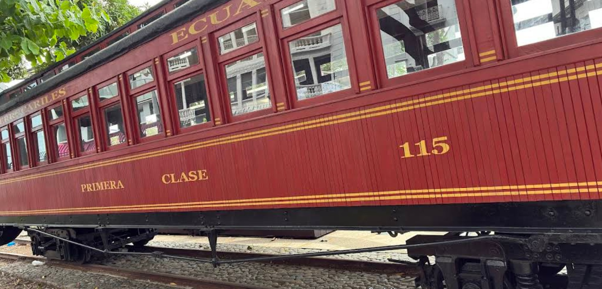
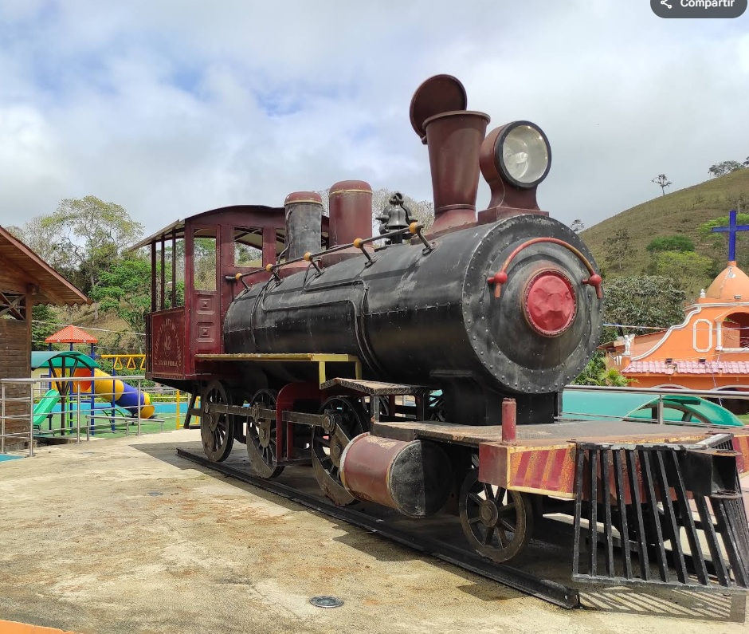
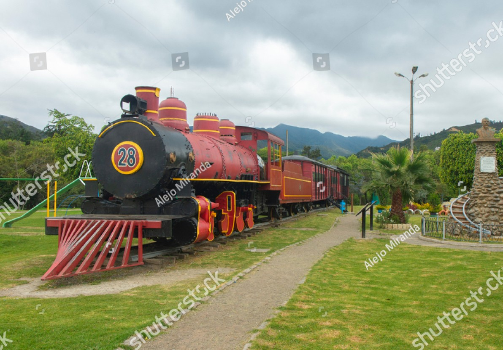
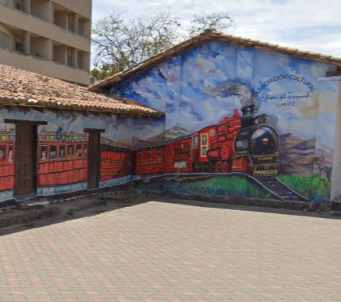

materialrodante en Pedestal
Locomotoras y piezas de tracción mecánicas históricas rescatadas del abandono y expuestas de forma estática en puntos clave.

Locomotora de vapor Baldwin № 8
Máquina a vapor dispuesta sobre un pedestal de piedra en los exteriores de la estación central. Representa el culmen de la obra ferroviaria transandina al llegar a Pichincha.

Coche de Madera №115
Antiguo coche de viajeros conservado y reutilizado como puesto de venta de boletos en el Malecón 2000.

Locomotora de vapor Baldwin №7
Máquina a vapor dispuesta sobre un pedestal en vía improvisada en la entrada del Centro Cívico ''Ciudad Alfaro''

Vagón cisterna 1109
Vagón de carga tanquero expuesto frente a la estación de El Tambo en la antigua línea ramal Sibambe-Cuenca.

Réplica Locomotora vapor №42
Réplica conmemorativa exhibida en honor al paso del antiguo ferrocarril minero y agrícola.

Vagones ''Boxcar''
Antiguos vagones furgones de carga conservados en la estación de Ibarra.

Locomotora de vapor №15
Antigua máquina de vapor con su tender y vagones tipo furgón boxcar en exhibición al aire libre.

Locomotora de vapor №28
Locomotora 28 más coches convertidos en complejo de ocio y restaurante temático.
Locomotora de vapor №14
Locomotora 14.
Espacios Públicos Dedicados
Plazas urbanas, paseos, museos de sitio e hitos geográficos diseñados para conmemorar el impacto social y humano del sistema ferroviario.

Parque del Ferrocarril
Parque de nueva construcción reaprovechando parte de la antigua estación de Cuenca y vagones apartados en el lugar.

Parque Ferroviario
Pequeño parque local con dos furgones tipo boxcar en exhibición.

Mural al tren Tumbaco
Pintura urbana del tren ubicada sobre el muro frente a la antigua estación de Tumbaco.